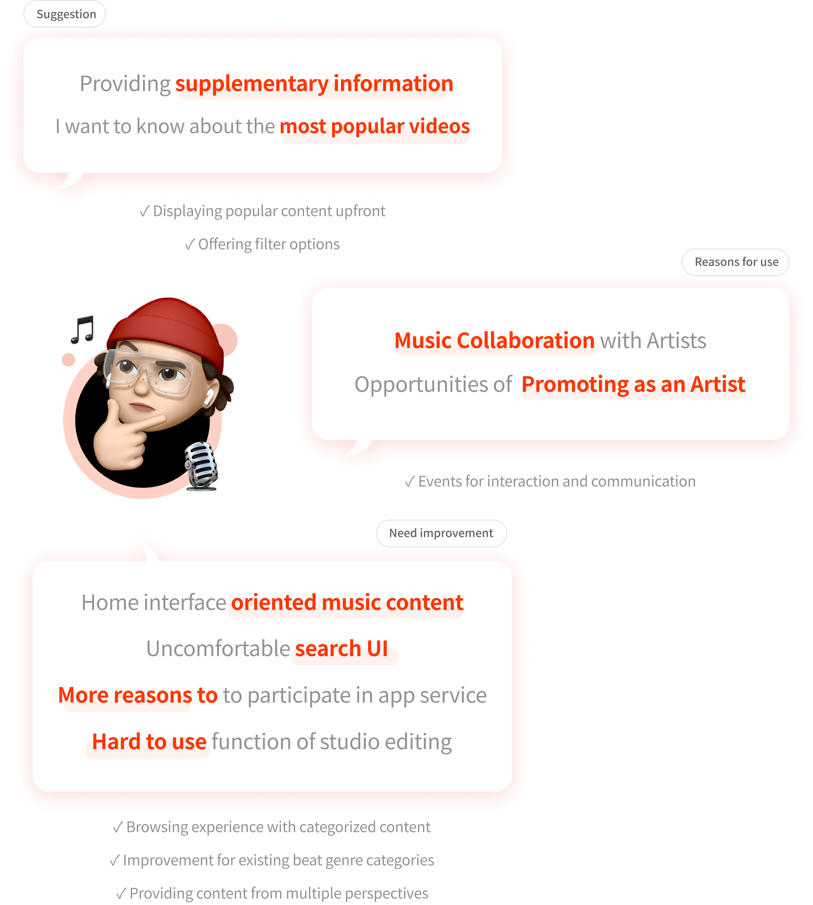
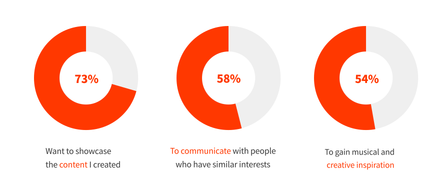
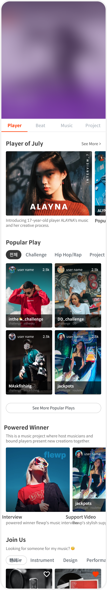
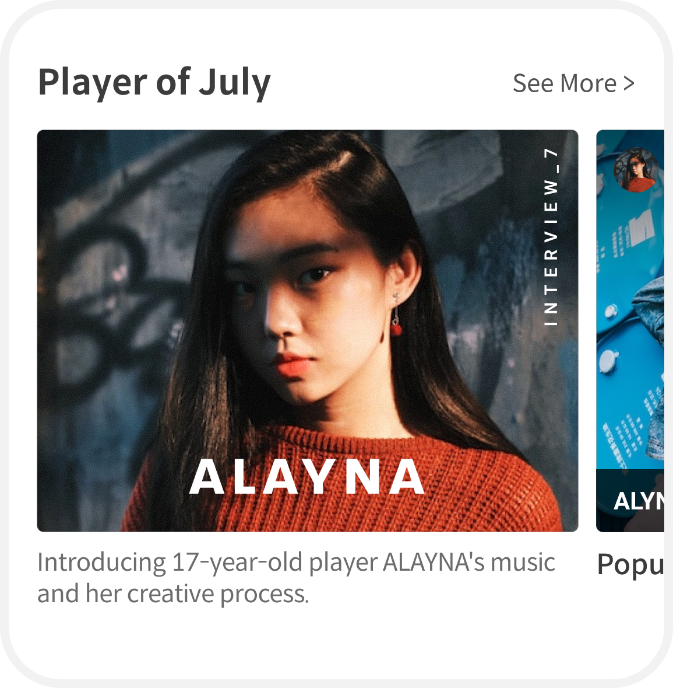
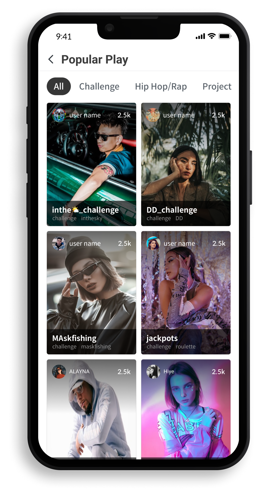
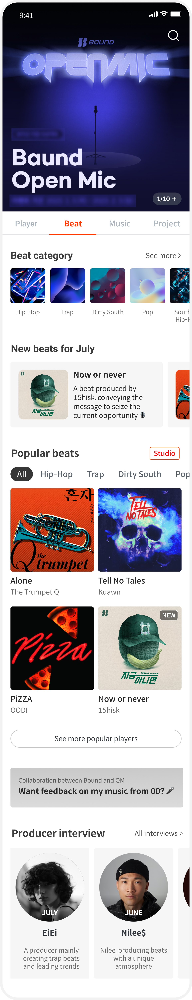
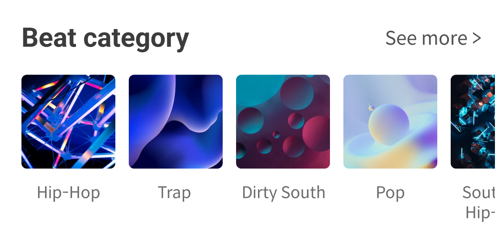
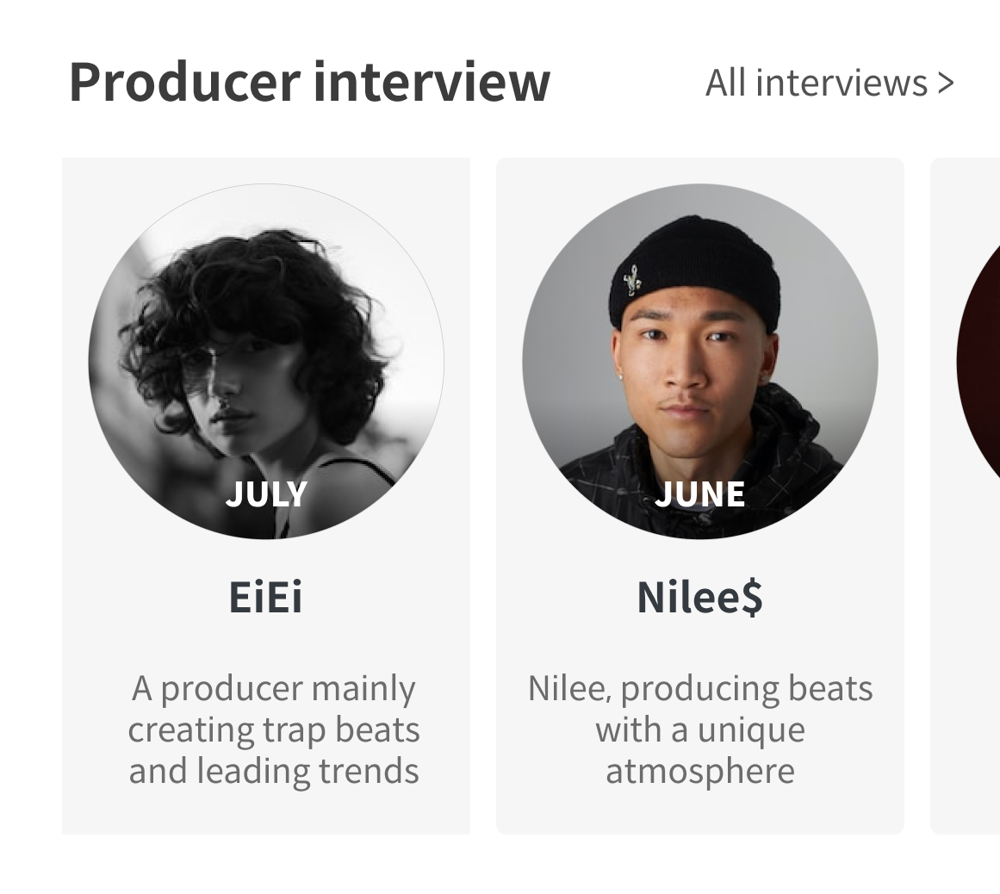

Baund
Bound is a social media platform that allows users to share content created with exclusive audio and video production tools. Users can create and share unique content using a variety of sound and video effects, along with editing and playback features.
Summary
As a member of the design team, I focused on the interconnected ecosystem of Viewers, Creators, and Music Companies to translate Bound’s core business logic into an intuitive user experience.
User Feedback
Analyzed interviews with users who participated in events via the Bound app.

If you want to continue using Bound, what are the reasons? (Multiple responses)

App Store User Reviews
This app is really great for providing opportunities, but I got a bit confused because there was no initial explanation on how to navigate it.
I'm enjoying the various events and hope to see more events in the future!
I hope to see a lot of diverse and fun content updated! There aren't many things to watch yet, so it's a bit boring.
There are only rap videos, so it's a bit boring. I hope more interesting videos get uploaded!
Issues: Player Tab
Problem
Limited user interaction | No filtering features | Lack of project description

Improvement direction
1. Insufficient User Engagement

Introduced a monthly content series featuring 'Player of the Month' interviews and music showcases to increase user engagement.
2. Lack of Content Control for Users

Implemented advanced filtering functionality within popular plays, allowing users to easily browse and discover a wider variety of content without feeling repetitive. To address limited engagement, the interface focuses on immediate content discovery. Introducing monthly showcases establishes a clear starting point for new users, while multi-dimensional filtering seamlessly handles cognitive load during browsing.
Issues: Beat Tab
Problem
Confusion of category | Lack of beat information

Improvement direction
1. Category Confusion

To resolve the onboarding confusion and lack of navigation guidance reported by users, I restructured the interface by introducing intuitive, genre-specific categories and popular beat filters on the main screen.
2. Lack of beat information

Enriched the browsing experience by providing monthly updates on new beats and featuring producer interviews to share the creative stories behind the music. The proposed alternative structures clear navigation to resolve historical user confusion. Enriching the interface with dedicated producer context creates a more informative and consistent environment for music exploration.